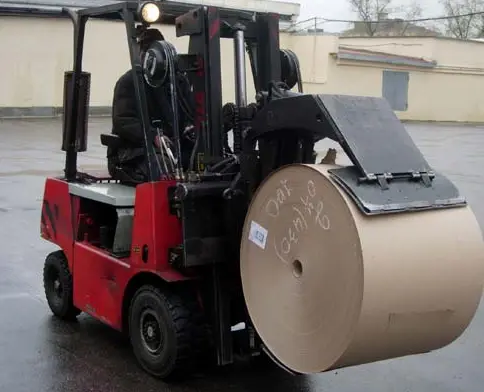

Продукция
Картон из макулатуры в рулонах, листах и картонной ленте в бобинах — для упаковки, сотовых заполнителей и спичечных коробков. На заводе две линии: одна делает коробочный картон, другая — картон-основу для пергамина и бумагу для гофрирования.

[нужны данные: форматы листов, ширина бобин и ленты, диаметр рулона и втулки, упаковка, минимальная партия, сроки, цены или порядок их запроса]
Коробочный картон
Марка Т. Масса 1 м² от 190 до 500 г.
| Показатель и метод | Значение |
|---|---|
| Масса 1 м², гГОСТ 13199-88 (ИСО 536-76) | 190–500 |
| Отклонение по массе 1 м², ± г, не болееГОСТ 13199-88 (ИСО 536-76), п. 6.4 стандарта | 15для 190–250 г/м²20для 260–430 г/м² |
| Толщина, ммГОСТ 27015-86 | 0,4–0,8 |
| Отклонение по толщине, ± мм, не болееГОСТ 27015-86 | 0,025для 190–250 г/м²0,05для 260–430 г/м² |
| Разрушающее усилие в среднем по двум направлениям, кгс, не менееГОСТ ИСО 1924-1-96 | 12для 190–250 г/м²15для 260–430 г/м² |
| Сопротивление расслаиванию, Н, не менееГОСТ 13648.6-82, метод 2 | 120,0 |
| Абсолютное сопротивление продавливанию, кПаГОСТ 13525.8-86 | 330–490 |
| Влажность, %ГОСТ 13532.19-91 (ИСО 287-85) | 5,0–9,0 |
| Сорность, соринок на 1 м²ГОСТ 13525.4 | 650включения 1,0–4,0 мм²75включения 4,0–6,0 мм² |
[нужны данные: назначение марки и примеры изделий]
Гильзовый картон
Марка ТГ. Масса 1 м² от 190 до 430 г.
| Показатель и метод | Значение |
|---|---|
| Масса 1 м², гГОСТ 13199-88 (ИСО 536-76) | 190–430 |
| Отклонение по массе 1 м², ± г, не болееГОСТ 13199-88 (ИСО 536-76), п. 6.4 стандарта | 15для 190–250 г/м²20для 260–430 г/м² |
| Толщина, ммГОСТ 27015-86 | 0,4–0,7 |
| Отклонение по толщине, ± мм, не болееГОСТ 27015-86 | 0,025для 190–250 г/м²0,05для 260–430 г/м² |
| Разрушающее усилие в среднем по двум направлениям, кгс, не менееГОСТ ИСО 1924-1-96 | 12для 190–250 г/м²15для 260–430 г/м² |
| Сопротивление расслаиванию, Н, не менееГОСТ 13648.6-82, метод 2 | 120,0 |
| Абсолютное сопротивление продавливанию, кПаГОСТ 13525.8-86 | 330–490 |
| Влажность, %ГОСТ 13532.19-91 (ИСО 287-85) | 5,0–9,0 |
| Впитываемость при одностороннем смачивании, Кобб 60, г/м²ГОСТ 12605-97 (ИСО 535-91) | 30–70 |
| Сорность, соринок на 1 м²ГОСТ 13525.4 | 650включения 1,0–4,0 мм²75включения 4,0–6,0 мм² |
| Энергия связей, Дж/м²метод на текущем сайте не указан | 200 и 300 |
[нужны данные: назначение марки; на текущем сайте она названа то «ТГ», то «ТГ-3»]
Спичечный картон
Марка ТС. Масса 1 м² — 310 г.
| Показатель и метод | Значение |
|---|---|
| Масса 1 м², гГОСТ 13199-88 (ИСО 536-76) | 310 |
| Отклонение по массе 1 м², гГОСТ 13199-88 (ИСО 536-76), п. 6.4 стандарта | +10 / −15 |
| Толщина, ммГОСТ 27015-86 | 0,5 |
| Отклонение по толщине, ± мм, не болееГОСТ 27015-86 | 0,02 |
| Разрушающее усилие в среднем по двум направлениям, кгс, не менееГОСТ ИСО 1924-1-96 | 14 |
| Жёсткость при статическом изгибе, Н·см, не менееГОСТ 9582-75 | 1,0 |
| Сопротивление расслаиванию, Н, не менееГОСТ 13648.6-82, метод 2 | 120,0 |
| Абсолютное сопротивление продавливанию, кПа, не менееГОСТ 13525.8-86 | 430 |
| Влажность, %ГОСТ 13532.19-91 (ИСО 287-85) | 5,0–9,0 |
| Сорность, соринок на 1 м²ГОСТ 13525.4 | 550включения 1,0–4,0 мм²50включения 4,0–6,0 мм² |
Кровельный картон
Марка КП. Масса 1 м² от 160 до 500 г.
| Показатель и метод | Значение |
|---|---|
| Масса 1 м², гГОСТ 13199 | 160–500 |
| Отклонение по массе 1 м², ± г, не более | 25 |
| Разрывная длина в машинном направлении, м, не менееГОСТ ИСО 1924-1 | 2000 |
| Впитываемость при полном погружении, %, не менееметодика и п. 6.10 стандарта | 100 |
| Время пропитки, с, не болееметодика и п. 6.11 стандарта | 90 |
| Влажность, %ГОСТ 13525.19 | 5,0 ± 2,0 |
[нужны данные: назначение марки и номер стандарта, на который ссылаются п. 6.10 и 6.11]
Прокладочный картон
Марка КУ. Масса 1 м² от 250 до 350 г.
| Показатель и метод | Значение |
|---|---|
| Масса 1 м², гГОСТ 13199 | 250–350 |
| Отклонение по массе 1 м², ± г, не более | 25 |
| Разрывная длина в машинном направлении, м, не менееГОСТ ИСО 1924-1 | 2000 |
| Впитываемость при полном погружении, %, не менееметодика и п. 6.10 стандарта | 100 |
| Время пропитки, с, не болееметодика и п. 6.11 стандарта | 90 |
| Влажность, %ГОСТ 13525.19 | 5,0 ± 2,0 |
[нужны данные: на текущем сайте все показатели, кроме массы, совпадают с кровельным картоном — проверить]
Документы
- Продукция соответствует стандарту организации СТО 00287846-002-2008 «Картон тароупаковочный».
- Завод внесён в публичный реестр производителей товаров с использованием вторичного сырья, номер 2026-05-19/R-675.
[нужны данные: действующие документы о безопасности продукции. На текущем сайте — санитарно-эпидемиологические заключения от 14.07.2008, срок действия по 15.07.2013]